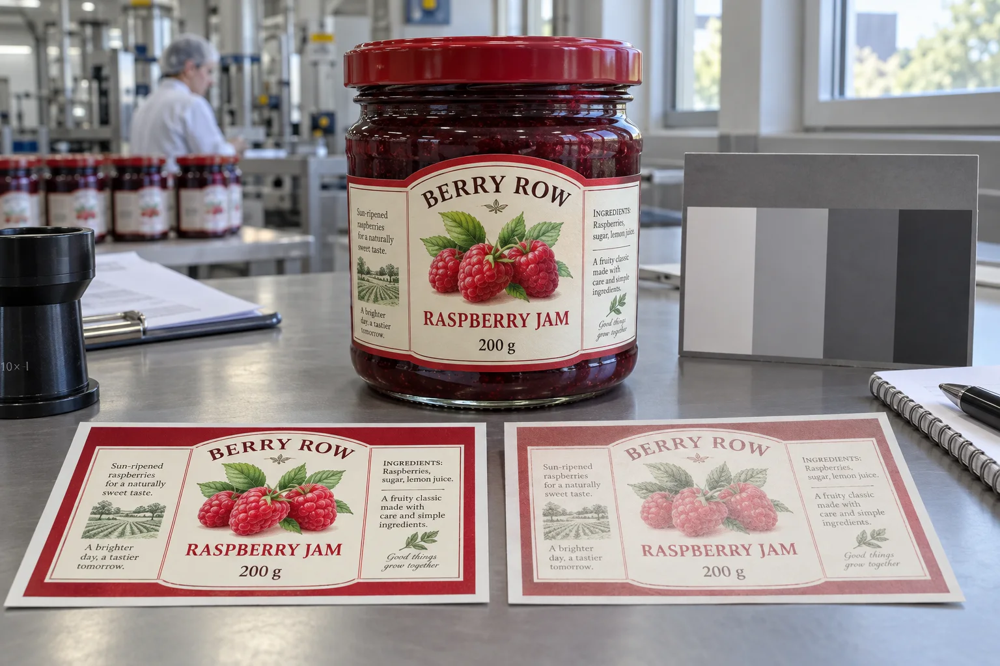

A customer compares a display jar with a new delivery and sees a difference. The discussion can quickly mix three questions: did the new run start at a different color, did the older label change during use, or did the comparison method change?
Maintain a delivery reference and an exposure-control pair as separate evidence. Each answers a different question, and neither should be substituted for a missing baseline.

AI-generated illustration retained on this article only. Fictional packaging, equipment and details; no measured result or actual customer/factory record.
Give each comparison a named purpose
An approved delivery reference describes the agreed starting appearance for its identified construction and revision. A protected control from the actual exposure comparison describes where that particular sample group began. The first helps discuss supply consistency; the second helps discuss change within the exposure study.
Keep both tied to physical sample identities. A protected control from a different printing run is not automatically a matched control, even when its product name and artwork are identical. Likewise, an old signed master that has itself changed cannot silently become evidence of the original color.
| Reference role | Link that must be retained | What it cannot establish alone |
|---|---|---|
| Approved delivery target | Construction, artwork, approval and reference condition | Durability over the intended display period |
| Production baseline | Actual run/lot, retained sample and initial observation | Cause of a later field change |
| Exposure sample | Same-run identity and recorded exposure route | General outdoor lifetime |
| Protected control | Matched sample origin and documented storage | Original condition if its own history is unknown |
| Comparison record | Viewing conditions, sample condition and reviewer | A contractual pass without an agreed criterion |
Make a new-delivery difference its own branch
If the retained production sample already differs from the approved target at receipt, investigate that delivery question before using the difference as a fading result. Identify material, finish and artwork changes. Record an unresolved initial mismatch rather than hiding it inside the exposure history.
If the production baseline and target were accepted, compare the exposed item with its matched protected control under the agreed viewing method. A change observed there is evidence about that sample group and route. It still needs technical assessment before a specific ink or substrate mechanism is named.
Where the initial observation is missing, state that limitation. A photograph taken months later cannot recreate the sample's original appearance. Avoid inventing a before image from a current digital artwork file.
Pause the conclusion if the comparison object changed
A detached label on a white card and the same design around a dark filled container can present different backgrounds and viewing geometry. Keep the comparison configuration consistent or identify the difference for the reviewer. Do not interpret a changed package background as proven ink loss.
Store the reference identities and observations with the inquiry rather than sending only a compressed side-by-side photograph. Agree any instrumental method with the print or testing specialist. This record organizes evidence; it is not an accelerated-aging conversion or an acceptance threshold.
For the separate issue of repeat-order color references, preserve the master and working-reference relationship. For friction damage use rub-testing planning, and identify the actual protective layer before comparing constructions.
Ask where the package will spend its life
Start with whether the product stays in a carton, an indoor aisle or a bright window display. Those routes create different evidence needs even when the artwork is identical.
The label has two jobs that buyers sometimes combine into one approval: look right when it arrives, and remain acceptable during its intended use. A signed color proof addresses the first. The second needs a separate discussion about exposure and acceptable change.
A bright display and a fast-moving shelf are different jobs
Imagine a composite jam brand with a deep raspberry-red label. A retailer places a display near a sunny window. Weeks later the founder compares it with stock kept in cartons and assumes the printer changed the color recipe. Without retained samples and exposure history, neither side has enough evidence.
Now consider a second brand whose jars move quickly through enclosed storage and an indoor aisle. It may reasonably choose a standard construction after a suitable trial rather than pay for a demanding outdoor specification it does not need.
The hypothetical brands need proportionate evidence matched to their actual routes rather than the same expensive protection package.
Fading is not the same as scuffing
| Visible change | Question to investigate | Useful comparison |
|---|---|---|
| Color weakens with exposure | Ink and substrate response to light | Exposed sample against protected control |
| Ink disappears at contact points | Rubbing or chemical contact | Handled and unhandled samples |
| New delivery differs immediately | Print variation or changed construction | Approved standard and retained production sample |
| Paper tone changes | Substrate aging and environment | Printed and unprinted material areas |
A photograph with automatic color correction is a poor referee. Bring the physical samples together under consistent viewing conditions before deciding which mechanism is most likely.
Why the ink name is not enough
Pantone explains in its discussion of printing color variation that pigments differ in lightfastness and paper can change with exposure, including changes to optical brighteners. Its explanation concerns its guides, not a lifetime warranty for your packaging, but the distinction between ink change and substrate change is useful.
Likewise, UV-cured is a process description. Sun Chemical lists UV and UV-LED curing ink systems separately among its label-printing technologies. Do not treat the word UV on a quotation as proof of resistance to sunlight. Ask for the exposure performance of the selected ink, material and finish together.
For a critical brand color, request evidence about that actual color formulation. A result for one ink or a different substrate should not quietly become the promise for the whole design.
A practical screening plan
- Define the intended display route and how long the packaging needs to remain acceptable.
- Keep matched production samples from the same run, including an unexposed control stored away from light.
- Expose comparison samples under recorded conditions relevant to the real route.
- Compare them at agreed intervals under consistent viewing conditions.
- Evaluate brand appearance and the readability of important information separately.
- Use a qualified lab and agreed method when a contractual durability claim needs stronger evidence.
A window trial can reveal that one candidate changes sooner than another in that window. It cannot establish that an arbitrary number of days equals years outdoors. Orientation, season, glazing, heat and the test setup affect the comparison. Record those limitations alongside the result.
Where color measurement is required, agree the method and tolerance with the print or testing specialist before comparing numbers. Choosing an unexplained difference threshold after a shipment arrives creates a dispute rather than an acceptance standard.
Send the printer a durability brief, not just a color code
Include the product, market, display location, intended period, critical colors, handling conditions and the acceptance evidence you need. Ask which claims the converter can support and which need outside testing. The fictional fading comparison in this article illustrates the issue; it is not a measured product test.
For abrasion, use our label rub-testing guide. For finish selection, see label lamination for food and beverages. For the initial color target, read content proof and contract color proof. Agree appearance at delivery and appearance after use as two related but distinct decisions.
Send the relevant project details
Discuss the observed label-color change with sample/run identities, delivery reference, available baseline and protected control, exposure history and photographs under consistent conditions. The form opens an email draft; use listed email or WhatsApp for files. Technical cause, testing availability and durability claims need confirmation.